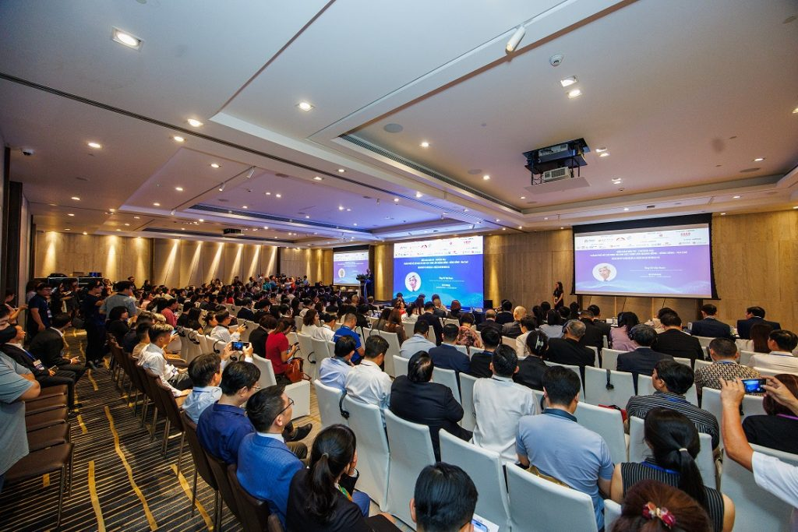

COMMERCIAL REAL ESTATE · LEASING DECISION SUPPORT
Capital Place
A commercial property experience redesigned around the decision a tenant is trying to make, not the brochure a building wants to publish.

The site needed to support a leasing decision, not just describe a tower
This independent redesign explored how a commercial real-estate website can become more useful to an occupier considering space. I owned the information architecture, visual direction, interaction design and front-end prototype. The main shift was from building-first storytelling to tenant questions: how much space do we need, where is it, what context matters and which enquiry should we make next?
Convert marketing information into decision objects
Location, workplace, amenities and sustainability establish relevance.
Space Finder translates headcount, area, timing and tower preference into a useful starting point.
Stacking and floor views communicate position without pretending to be live commercial inventory.
Viewing, proposal and technical enquiries are separated by intent.
Architectural character becomes part of the interaction grammar
Decision-support over brochure
Interactive space and enquiry tools are given the same visual authority as storytelling content.
Domain-specific visual grammar
Graphite, paper and orange accents borrow from floor-plan and architectural precision without literal skeuomorphism.
Truthful states
Availability, divisibility, pricing and timing are treated as information to confirm rather than simulated live data.
A more useful prototype for a high-consideration journey
The prototype connects place, workplace value, spatial exploration and contextual enquiry in one journey. It demonstrates a stronger decision model and responsive interaction system, but it is not a production leasing platform.
No live inventory, public pricing, CRM submission or conversion outcome is claimed. Floor availability, divisibility, timing and commercial terms still require confirmation by the leasing team.
High-consideration websites need useful objects, not just stronger storytelling
The project reinforced that “premium” content alone does not reduce decision uncertainty. The strongest value came from turning tenant questions into interface objects and preserving clear boundaries where the prototype could not know commercial truth.
What I owned, chose, traded off — and what is still unknown
A recruiter-scan summary derived from the public case source. Unknowns stay explicit instead of being converted into team, stakeholder, failure or outcome claims.
UI/UX Designer
Independent project; no separate PM, engineering or stakeholder team is documented in this public case.
NOT EXPLICIT — the case describes the solution, but the governing product or technical constraint is not isolated as a decision input.
NOT DOCUMENTED — the selected direction is visible, but a verified alternative set is not recorded.
NOT EXPLICIT — implemented direction exists, but the case does not yet isolate one decision and its rationale.
NOT DOCUMENTED — no verified downside or cost of the selected direction is stated explicitly.
Implementation reality: Interactive prototype. No verified engineering-collaboration record is present in this public case.
Local component, state or system implications are documented in the case; downstream production impact is not measured.
NOT AVAILABLE — no verified failure, rejected release or project pivot is documented in this public case.
PLANNED / NOT MEASURED. Baseline: Needs first usability benchmark.
Run the first benchmark against the predefined A26 target; if the threshold is missed, revise the selected model before adding more polish or scope.
Success criteria before success claims
≥ 4/5 participants identify the right workspace/property path and next action without navigation recovery. This is a decision threshold for future validation, not a measured outcome.